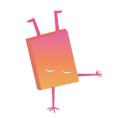

Ethan Colucci
Ethan ColucciAbout Me
Driven and adaptable Game Developer with 7 years of experience building interactive experiences, including 4 years in professional environments. Currently specializing in Unity, C#, and Virtual Reality (VR) development for training and simulation. I create immersive, high-performance applications by combining strong technical foundations with creative design thinking. Experienced across VR, mobile, and traditional platforms, I thrive on solving complex problems, rapidly learning new technologies, and collaborating across disciplines to deliver polished results.

Skills and Technologies
🧠 Programming
- C#
- C++
- Python
- Go (Golang)
- Object-Oriented Programming
- API Integration
🎮 Game Engines and Packages
- Unity Engine (VR, mobile, and desktop platforms)
- Godot
- Photon Pun
- Photon Fusion
🗂️ Version Control
- Git (GitHub, SourceTree)
- PlasticSCM
🥽 Virtual Reality and Mobile
- VR application development
- Interaction design
- Real-world tool simulation
- Cross-platform optimization
- Deployment for multiple platforms
☁️ Other Technologies
- AWS
- MongoDB
- Photon PUN and Fusion
- Database interaction
🗣️ Languages
- Native English
- French
Professional Experience
VR Vision — Intermediate VR Developer
September 2022 – June 2025
- Develop VR Training apps in Unity
- Create accurate simulacrums of professional tools
- Create designs based on real training processes
- Participate in on-site visits to document training processes
- Participate in the design and development of the in-house VR toolkit
 No Fuss Tutors — Game Programmer
October 2021 – September 2022
- Sole C# programmer for a Unity-based game
- Participated in the design process
- Developed for multiple platforms
- Integrated AWS and MongoDB for database interaction
 Unity Game Developer — Freelance
Unity Game Developer — Freelance
January 2021 – October 2021
- Collaborated with clients to define project goals and timelines
- Developed projects using Unity
- Communicated effectively and adapted to client needs
- Quickly learned and implemented new APIs
Education
Boot.Dev - Backend Development
Courses
School
| Institution | Degree | Date |
|---|---|---|
University of Ontario Institute of Technology | Bachelor of IT with honors in Game Development and Entrepreneurship | Graduated April 2019 |
École secondaire Toronto Ouest | Bilingual High School Diploma (English and French) | Graduated June 2015 |